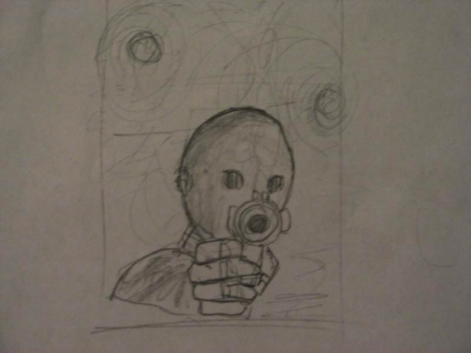
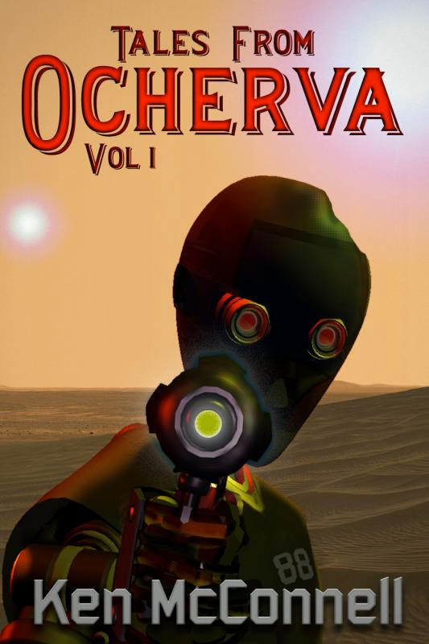

SILICANTS
The idea for the Silicants came to me when I was creating short stories about Devon Ardel and her Stellar Rangers on the planet Ocherva. My first ever short story when I was in Middle School was about androids meeting in a saloon that forbid humans and aliens. The androids were talking about a revolution they were planning against the humans. I loved the idea of using a human bar to covertly conspire against their makers. I decided to rewrite that story and two primary Silciant characters emerged: Thirty-Seven and Eighty-Eight. Eighty-Eight was giving the other android an upgrade chip that would make it sentient. After the operation, Eighty-eight became the mentor for Thirty-Seven, making sure the newly sentient android knew how to exist as a person and still make it's owner believe it was just a normal android. Of course it's owner was Devon Ardel. 
Both of these sentient androids were explored in those stories now under the anthology - Tales From Ocherva, Vol 1. Gradually a complete back story about the Silicants emerged and they became central players in the Star Saga. They were the only characters who exist in each of the three time periods as they do not die from old age, like the human characters.  The upgrade chip that silicants were fitted with made them sentient, but they could not figure out how it happened. At the time I was writing the Stellar Ranger stories I was toying with the idea of what if anything about the land where you live, affects who you are. For the Silicants, the silica that existed on Ocherva and from which their chips were made, seemed to have some kind of strange power to make them sentient. Chips made with silica from other worlds did not enable their existance. So the planet Ocherva became a central place for both Silicants and humans. The humans were affected by smoking the Ocha weed, my version of a tumble weed. It allowed most humans to see the future and that affect in turn moves the plot for some of the main characters in the Starforgers Trilogy.